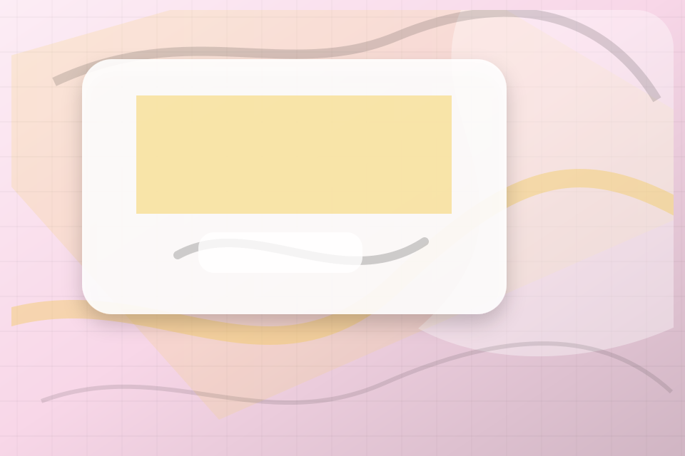

<!-- Source partial: Pastel dining-room hero. -->
<section id="section-hero" class="section hero-section hero-pastel-dining-room-hero composition-pastel-dining-room-hero" data-section="Hero" data-composition="Pastel dining-room hero" data-hero-type="Pastel dining-room hero" data-track="section_home_hero">
  <div class="container hero-grid">
    <div class="hero-copy">
      <p class="eyebrow">Home / 01</p>
      <h1>TableFlame</h1>
      <h2>A sensory restaurant site with pastel stage surfaces, menu cards, room-gallery rhythm, and booking CTAs</h2>
      <p class="lead">TableFlame brings warm sensory hospitality guidance to the opening route, with practical context for restaurants, cafes &amp; food service decisions and a clear route to the next step.</p>
      <p>TableFlame connects the opening route with practical proof, useful comparisons, and the questions restaurants, cafes &amp; food service visitors bring to the page. Visitors can scan the essentials, understand the tradeoffs, and decide whether to reserve a table or keep exploring. The rhythm is built for action without removing the context people need to trust the decision.</p>
      <div class="button-row">
        <a class="button primary" href="../contact.html" data-track="cta_home_hero">Reserve Table</a>
        <a class="button secondary" href="https://ash-tra.com/discovery/" data-track="secondary_home_hero">Discuss build</a>
      </div>
      
      <div class="hero-proof" aria-label="Trust notes">
        <span>Check availability</span><span>Plan the visit</span><span>Reserve with context</span>
      </div>
<div class="container signature-panel signature-menu" data-signature="menu" data-page="home" data-section-key="hero">
    <div>
      <p class="eyebrow">Pastel dining-room hero</p>
      <h3>Choose the menu path</h3>
      <p>Select a path and TableFlame keeps the next step, proof, and follow-up expectation aligned with desire and social confidence.</p>
    </div>
    <div class="signature-controls" role="group" aria-label="Menu filter, allergen toggle, reservation widget, gallery">
      <button type="button" data-option="choose" aria-pressed="true">Choose</button><button type="button" data-option="check" aria-pressed="false">Check</button><button type="button" data-option="reserve" aria-pressed="false">Reserve</button>
    </div>
    <output data-signature-output aria-live="polite">Choose route selected for TableFlame.</output>
  </div>
    </div>
    <figure class="hero-media target-media target-kind-restaurant target-profile-sketch">
      <div class="target-stage target-restaurant target-profile-sketch" aria-hidden="true">
  <div class="poster-grid"><article><span>Mood</span></article><article><span>Food</span></article><article><span>Menu</span></article><article><span>Booking</span></article></div>
  <div class="target-strip"><b>TableFlame</b><span>Reserve Table</span></div>
</div>
      <picture>
        <source media="(max-width: 640px)" srcset="../assets/images/hero/restaurant-home-hero-mobile.svg">
        <source media="(max-width: 1024px)" srcset="../assets/images/hero/restaurant-home-hero-tablet.svg">
        
      </picture>
      <figcaption>Dining rooms, plates, cocktails, theatrical interiors expressed through a custom static visual system.</figcaption>
    </figure>
  </div>
</section>
